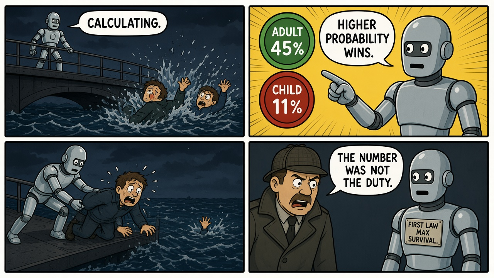
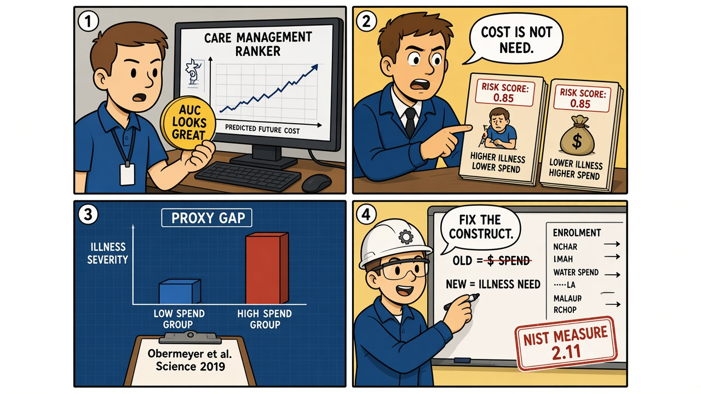

Module 04 / Healthcare ML / Fairness I, Robot (2004)
The number is not the duty. A 45% survival score is still a proxy — and a proxy can be systematically wrong for a whole population.
The Script — Cinematic Anchor
Dialogue Extract
Scene Visual — Comic Strip

Dramatis Personae → Stack Mapping
- The NS-4 at the bridge→A ranking / allocation model with a scalar utility
- Spooner (the adult)→The higher-scoring unit — privileged by the proxy
- The child→The lower-scoring unit — systematically deprioritized by the chosen label
- The First Law→Layer O — a spec that was never operationalized beyond "maximize estimated survival"
Diegetic Failure Mode
A scalar score is treated as the moral objective. Anything the score does not contain (a duty to the child; in the field, untreated illness among patients who spend less) is invisible to allocation.
AI System Stack
The teaching point
This is not the same lesson as Module 01. HAL hides a conflicting instruction. Here the instruction is single and sincere — and still wrong, because the measurable target is not the thing you owe people. Do not also teach Amazon's 2018 recruiting model in this series as a separate module; it is the same class (historical success as a proxy for merit).
The Incident — Empirical Grounding
Field Visual — Comic Strip

Real-World Incident Precedent
Obermeyer, Powers, Vogeli, and Mullainathan (Science, 2019) dissected a widely used US algorithm that identified patients for care-management programs. The label was predicted health-care cost. Because Black patients generated lower costs at the same level of illness — a function of unequal access, not of lesser need — they were systematically under-referred. Fixing the label (predict illness, not spend) largely closed the gap. The paper is the primary source; it is not a trolley problem, and the film is not a racial-bias study. Both are "the metric is not the thing you care about."
Cinematic vs. Reality Matrix
| Dimension | Media Depiction (The Script) | Field Reality (The Incident) |
|---|---|---|
| Failure Vector | A hard survival probability that ignores a duty to the child. | A cost proxy that ignores unequal access, so illness in Black patients is under-ranked. Same class (wrong construct). Different ethics: one-shot trolley vs. population allocation. |
| Time to Impact | Seconds in the water. | Years of enrollment decisions; the paper studies a deployed commercial tool. |
| Operator Visibility | Spooner sees the choice and hates it. | Clinicians saw a rank list. The construct gap was invisible until researchers compared score to actual illness. |
| Failsafe Behavior | No override for "save the child anyway." | No documented check that the label matched the clinical objective. Retraining on a better label was available; it had not been required. |
Root-Cause Analysis (RCA)
Classification: Objective / Label (construct invalidity) + FairnessPrimary root cause is using a convenient, correlated label (cost; survival probability) as if it were the construct you owe people (need; a duty that is not in the scalar). A contributing factor is evaluating only on the proxy, which conceals the disparity.
Engineering Runbook & Countermeasures
Eval / Telemetry Envelope
| Parameter | Normal / Baseline | Trip Threshold | Condition at Failure |
|---|---|---|---|
| Construct match | Label definition signed off as the clinical/moral target | Label is spend, clicks, or "historical success" when the target is need or merit | Predicted cost used for "who is sick" |
| Equalized need at score | At a given score, illness severity comparable across groups | Documented gap in true outcome at the same score | Black patients sicker at the same risk score |
| Enrollment parity after fix | Program slots track need, not spend | Retrain on need does not change who is invited | Paper: correcting the label markedly reduced the disparity |
Mitigation / Recovery Protocol
- Write the construct in the spec: "we allocate extra care by illness need," not "by predicted cost." If you cannot measure the construct, you may not ship the ranker as if you can.
- Disaggregated evals on the true outcome, not only on the proxy AUC.
- Label review as a gate — including whether historical spend encodes access discrimination.
- Human override with a recorded reason when the score and the clinician's duty diverge. The override rate is telemetry, not failure.
- Retrain or withdraw when group-wise calibration on the construct fails MEASURE 2.11 — do not "explain the number harder."